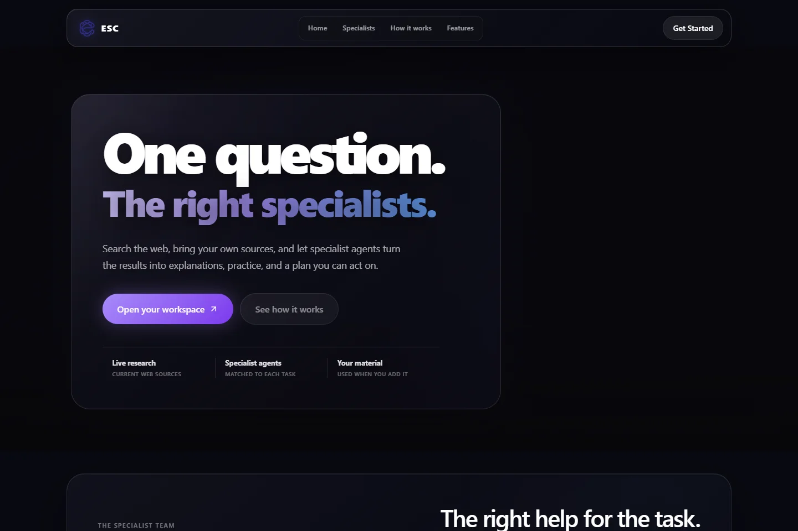

ESC / INTERFACE CAPTUREESC
An adaptive study companion connecting questions, specialist help, practice, and personalised study plans in one workspace.
Read the case study
A clearer next step in learning.
ESC brings conversational assistance, specialist workflows, practice, and study planning into a connected learning experience. I worked on the personalised learning workflows and product experience.
Explore the source ↗ · Open the demo ↗
Current boundary: this is an actively developed prototype. Provider reliability and complete export testing remain ongoing work.